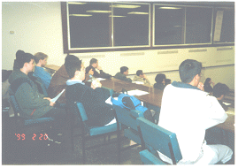

Nobody knows since when the earth has existed. And nobody knows when it made creatures of life exist on itself.
However, according to what has existed the world makes itself exist endlessly on the basis of a principle.
Gautama Buddha who attained the supreme enlightenment for the first time in the present mankind said as follows after observing such things as stated just before, "Something good or bad observed through the system of phenomenon takes place on the basis of the law of 'providence'. The existence of the phenomenon that something once created exists perpetually is possible by Reincarnation."
Let me explain what he said. Everything changes depending on the matters connected to something in it. And things once made to exist, repeat themselves endlessly through changes as long as special reasons do not happen. If you have even a little interest, you can also understand very easily what I said.
These facts let us know the fact that the earth repeats itself endlessly in the same way as other things in the system of phenomenon do.
If it is not true, it is impossible for the earth to have the present circumstances where human beings can live.
How is it possible? I was very surprised to know the phenomenon.
Then, let's confirm how the earth has been able to stay with human beings for such a long time. The world comes back to the original point periodically through what has happened in itself. It happens for an instant. The glorious civilization disappears without trace and the world changes back to the figure of the beginning of the world.
The movements of the earth's crust. The phenomenon of a huge tidal wave by a seismic shock, earthquakes and the activities of volcanoes extinguish all traces. Through the very activities, a new world comes into being. These kinds of activities change the world.
This event arose past mankind and will also occur to mankind in the future.
Scientist call this event a 'Changing Period'.
A 'Changing Period' means the activities which change the world. There have been countless changing periods in the world.
That is why creatures of life have been able to survive eternally in the world. Whenever a changing period occurs, human beings have crucial roles. The roles have made it possible for mankind to survive endlessly.
A changing period will be in the 21st century.
Some indications might happen already. They will have to be verified. A number of people among us will move to new mankind. There will be someone who cannot do so. But the results can only be known through causes. If you are curious about your future, please confirm what kinds of problems you have. The answers always lie in questions.
If you want to change yourself, you can so by changing questions in you.
You must know the numbers. You can make mathematical questions and solve them. In the same way, if you open your eyes a little bit to things of the world, you can recognize your own questions and solve them as well. If then, you can free from the destiny which is eager to control you, and finally you will be able to control your destiny.
The reason why I tell you these facts is that the world makes everything exist on the basis of the principle which lies in questions.
These things have not been known to the human world so far. It is because human beings have not been able to recognize the essential things in 'what is', in spite of observing it. This is the same principle as you do not understand what questions in mathematics mean in spite of looking at them when you can not count the numbers.
When I was in the same situation as yours, I did not have even interest in what I have talked about here. That is why I understand your position.
Nobody can understand the facts easily. This is the very reason why they have not been known to you yet.
There have been two people who were born and had the ability to understand things of the world in the present mankind.
Gautama Buddha born in India 3,000 years ago saw the world of essence which made things of the world exist.
However, the fact that he had explained about a changing period has not been confirmed yet. What we know is that nobody has explained about a changing period in detail.
Some prophecies about a changing period have come down. They have been made by a few prophets.
Those prophecies do not explain about things in questions and do not give obvious solutions which can solve the questions either.
One of the most important reasons that I travel around the world is that I believe that all of you should also confirm what a changing period is like with interest.
It is very precious to you and the world in the future to do so.
Then let me talk about how you can believe what I said.
Here is the answer. First, I will make problems through your questions. And then you can confirm what the problems are like. This may help you to understand what I have told.
Second, it will be good to tell the difference between your intellectual sight and my sight through matters.
Third, if I can have some chances to ask, I will ask a few questions about some of the teachings which are the most popular in your community.
I wonder who among you can understand the question which I ask and answer it. If we do not confirm what something which you are unaware of is like, it will deceive us again in the future.
Disclosure of what is and becoming the owner of material or civilization do not cover all aspects of science.
Today's science has not revealed anything in human beings' lives correctly.
For this reason, I am travelling around the world.
I am searching for the way of mankind.
The very way which I am looking for lies in you.
That is why I try to reveal things of the world in front of you.
When truth comes out everybody can understand things of the world.
However, when I have tried to do this work, nobody has helped me and people who I have met did not like it.
I understand the reason why the reality was like that. It is because you are not the same as me and you cannot recognize things in truth even though you listen to what I say. As soon as you meet me you get bored.
But what else can I do?
The future of the world and you is up to my activities. People who are here together with me are trying to provide some chances of meeting between you and me with their own expenses. The reason why they do like that is that they learned what love is.
If you can open your eyes to things of the world you can change yourself.
I hope that my activities can be helpful to your life.
